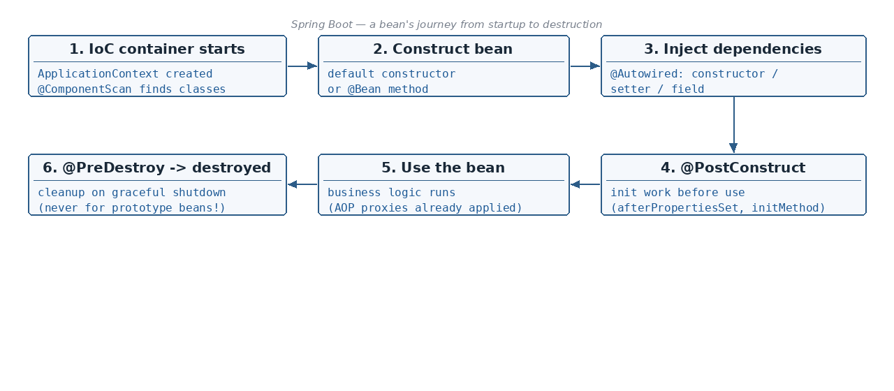

What a bean is, and what the IOC container does with it · Two ways to create a bean — @Component vs @Bean — and when…
☕ 7 min read · 🎬 Video walkthrough · 📊 UML diagram · 💻 Runnable code
⚡ In a nutshell — What a bean is, and what the IOC container does with it · Two ways to create a bean — @Component vs @Bean — and when @Component fails · How Spring Boot finds your beans (@ComponentScan, @Configuration) · When beans get created: eager vs lazy initialization
A bean is a Java object which is managed by the Spring container (also known as the IOC container).

The IOC container contains all the beans which get created, and also manages them — it creates them, wires them together, and destroys them at the end.
Added: IOC = Inversion of Control. Normally your code creates objects with
new. With IoC the control is inverted — the container creates and manages the objects, and your code just declares what it needs. TheApplicationContextinterface is the implementation of the IOC container that Spring Boot gives you.
@Controller, @Service etc. all internally tell Spring to create a bean and manage it.So here, Spring Boot will internally call new User() to create an instance of this class:
@Component
public class User {
String username;
String email;
}
// works: auto-configuration calls the DEFAULT constructor -> object created
Now, here Spring Boot has its auto-configuration rule — "OK, I have to call the default constructor and it will create the object". But watch what happens with a parameterized constructor:
@Component
public class User {
String username;
String email;
User(String username, String email) {
this.username = username;
this.email = email;
}
}
// FAILS: default constructor not present -> auto-configuration
// cannot create the object using a default constructor.
Why does it fail? Because Spring Boot does not know what to pass in these constructor parameters.
So what to do? @Bean comes into the picture — we provide the configuration details ourselves and tell Spring Boot to use it while creating the bean. (@Component removed from the class.)
public class User { // plain class, no @Component
String username;
String email;
public User(String username, String email) {
this.username = username;
this.email = email;
}
}
@Configuration
public class AppConfig {
@Bean
public User createUserBean() {
return new User("defaultUsername", "email"); // WE tell Spring how
}
}
Two important rules from the notes:
User and @Component is added to the class and a @Bean configuration exists — first priority is always given to @Bean.User objects:@Configuration
public class AppConfig {
@Bean
public User user1() { return new User("u1", "u1@mail.com"); }
@Bean
public User user2() { return new User("u2", "u2@mail.com"); }
// -> TWO distinct User beans live in the container
}
@ComponentScan annotation — it will scan the specified package and its sub-packages for classes annotated with @Component, @Service etc.@ComponentScan(basePackages = "com.patel.boot")
@Bean annotation in a @Configuration class.Good to know:
@SpringBootApplicationalready contains@ComponentScan— by default it scans the package of your main class and everything below it. That is why your classes are found "magically" as long as they sit under the main package.
Eagerness
Lazy
@Lazy annotation:@Lazy
@Component
public class Order { }
// created only when first requested, not at startup
This is the complete journey of every bean, from application start to destruction:
ApplicationContext provides the implementation of the IOC container.@ComponentScan to look out for the classes for which beans need to be created.@Component
public class User {
public User() {
System.out.println("hi");
}
}
No scope annotation, so by default the scope is singleton — i.e. eager initialization — i.e. at application start it will create the bean (and you will see hi printed during startup).
@Autowired first looks for a bean of the required type.@Component
public class User {
@Autowired
Order order;
public User() {
System.out.println("Hi");
}
}
@Lazy
@Component
public class Order {
public Order() {
System.out.println("Lazy");
}
}
// Output at startup:
// Hi
// Lazy
Order is @Lazy, User needs it — so injecting the dependency forces its creation right after User's constructor runs.@Autowired Order order is not there, then only Hi will be printed (the lazy Order bean is never needed, so it is never created).@PostConstruct
public void initialize() {
System.out.println("Bean is Ready");
}
// Output at startup:
// Hi
// Lazy
// Bean is Ready
Use the bean in your application. Means: we are using the bean (or object) to invoke some methods, to perform some business logic.
ConfigurableApplicationContext context =
SpringApplication.run(SpringbootApplication.class, args);
context.close();
@PreDestroy
public void preDestroy() {
System.out.println("destroy");
}
Because of this it will print destroy — as we are closing the application immediately after it is started.
Good to know:
@PostConstructand@PreDestroycome fromjakarta.annotation(Java EEjavax.annotationin older versions), not from Spring itself — Spring just honors them.@PreDestroyruns on a graceful shutdown (context.close(), Ctrl-C); it will not run if the process is killed withkill -9.
Added: interviewers love this follow-up — "is
@PostConstructthe only way?" No. Spring supports three init/destroy mechanisms, and they have a fixed execution order:
@PostConstruct — @PreDestroyInitializingBean.afterPropertiesSet() — DisposableBean.destroy()@Bean attributes — @Bean(initMethod = "init") — @Bean(destroyMethod = "cleanup")// All three init hooks on ONE bean — printed in this exact order:
public class Connection implements InitializingBean, DisposableBean {
@PostConstruct
public void annotated() { System.out.println("1. @PostConstruct"); }
@Override
public void afterPropertiesSet() { System.out.println("2. afterPropertiesSet()"); }
public void customInit() { System.out.println("3. initMethod"); }
// destroy side, same ranking:
@PreDestroy
public void preDestroy() { System.out.println("1. @PreDestroy"); }
@Override
public void destroy() { System.out.println("2. DisposableBean.destroy()"); }
public void customClose() { System.out.println("3. destroyMethod"); }
}
@Configuration
public class AppConfig {
@Bean(initMethod = "customInit", destroyMethod = "customClose")
public Connection connection() { return new Connection(); }
}
Added: order to remember — init:
@PostConstruct→afterPropertiesSet()→initMethod; destroy:@PreDestroy→DisposableBean.destroy()→destroyMethod. Prefer the annotations: they don't couple your class to Spring interfaces; useinitMethod/destroyMethodwhen the class is third-party code you can't annotate.
Added: the fuller picture of the sequence between "inject dependencies" and "use": 1. Construct → inject dependencies. 2. Aware callbacks — if the bean implements
BeanNameAware/ApplicationContextAware, Spring hands it its own name / the container reference here. 3.BeanPostProcessor.postProcessBeforeInitialization()— runs for every bean (this is what triggers@PostConstruct). 4. Init hooks (the three above, in order). 5.BeanPostProcessor.postProcessAfterInitialization()— where AOP proxies wrap the bean (Topic 09). 6. Bean is ready for use.
Added: for prototype-scoped beans Spring calls the init hooks but does NOT manage destruction —
@PreDestroy/destroy()are never invoked for prototypes. The container hands the object over and forgets it; cleanup is the caller's job. (Scopes in detail: Topic 07.)
@PostConstruct, @Autowired, AOP proxies — knowing it exists demystifies "Spring magic" and stack traces.spring.main.lazy-initialization=true defers all bean creation — faster boot, but moves failures to first request; use selectively.@DependsOn forces creation order when there's an implicit dependency (e.g., a cache warmer needing a migration bean).ApplicationReadyEvent, ContextClosedEvent) are the clean hooks for warmup and shutdown work — prefer them over ad-hoc main-method code.ApplicationContext is the container implementation.@Component (convention — Spring calls the default constructor) or @Bean in a @Configuration class (you construct it — needed when the constructor takes parameters).@Bean wins over @Component for the same class; two @Bean methods = two beans.@ComponentScan (package + sub-packages) or explicit @Bean methods.@Lazy).@PostConstruct → Use → @PreDestroy → Destroy.@PostConstruct → afterPropertiesSet() → initMethod; destroy: @PreDestroy → DisposableBean.destroy() → destroyMethod.BeanPostProcessor before-init → init hooks → after-init (AOP proxies).Next topic: Dependency Injection — why new inside a class is a problem, three injection styles, and the classic circular / unsatisfied dependency issues.
👏 Found this useful? Give it a few claps so more developers discover it, and follow for the whole series — every article ships with a UML diagram, runnable code, a narrated video, and a companion PDF. Happy building! 🚀